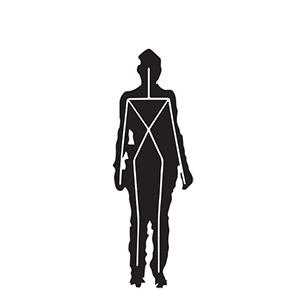

Research
He has experience in Computer Science, focusing on Pattern Recognition, Data Mining, and Machine Learning. You can see below relevant researches along with his career.
|
|
key poses learning and decision forests Leandro Miranda Thales Vieira, Dimas Morera, Tomas Lewiner, Antonio Wilson Vieira, Mario Fernando Campos, pdf / video/ youtube / slides/ Dataset Sibgrapi, 2012 |
|

|
Leandro Miranda Thales Vieira, Dimas Morera, Tomas Lewiner, Antonio Wilson Vieira, Mario Fernando Campos, Pattern Recognition Letters, 2013 |
|
|
Leandro Miranda, ISABO, 2019 |

|
Leandro Miranda BRACIS,2016 |
My Skills
Python (Pandas, Numpy, Seaborn, Tensorflow, Scikit Learn and Scikit Multiflow)
95%
Java
95%
C++
95%
HTML
80%
CSS
80%
PHP
70%
JavaScript
70%
MongoDB,Hadoop
60%
Docker
50%
Apache Spark
40%
SQOOP,Hive,Redis
30%
Pig, Flune
30%
Android
30%
Kubernates
20%